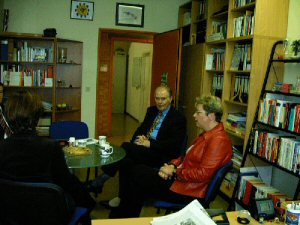

Archiv
Eröffnungsrede von Frau Prof. Dr. Meyer zu Bexten
Sehr geehrte Damen und Herren, liebe Kolleginnen und Kollegen, liebe Freunde!
Ich möchte Sie alle, und das natürlich auch im Namen meines Kollegen Herrn Prof. Schumann-Luck und meinen sehbehinderten und blinden Studenten, ganz herzlich hier begrüßen und mich für Ihr sehr zahlreiches Kommen aus den unterschiedlichsten Städten unserer Republik recht herzlich bedanken.
Als letzte Rednerin am heutigen Tag habe ich nun das schwere Los gezogen, Ihnen noch etwas Neues zu berichten, was zuvor noch nicht gesagt wurde. Meine Vorredner haben immer von dem Zentrum gesprochen, wie es derzeitig aufgebaut ist. Aber auch dieses Zentrum hat natürlich eine Vorgeschichte.
Als Gründerin vom BliZ, so lautet der Name unseres Zentrums für sehbehinderte und blinde Studierende, in der Hoffnung, derselbige möge uns nicht treffen, (höchstens als Geistesblitz), möchte ich die heutige Veranstaltung zum Anlaß nehmen und in meiner Rede zu Beginn einen Rückblick auf die letzten 13 Monate geben.
Ja, liebe Gäste, solange ist es nun schon wieder her, seit ich die erste Idee zu so einer Studienmöglichkeit für Blinde und Sehbehinderte hatte. Den einen mag zwar die Zeit kurz vorgekommen sein, denn in diesen 13 Monaten wurde sehr viel geschaffen. Den anderen wiederum kam die Zeit recht lang vor, da ich sie häufig mit vielen zusätzlichen Aufgaben und Problemen beschäftigt habe. Denke ich da beispielsweise an unsere Hausmannschaft.
Gerade in den letzten Wochen wurde ich immer wieder mit den folgenden Fragen konfrontiert:
- Welche Motivation hatten Sie, sich für behinderte Menschen, und speziell für Sehbehinderte und Blinde, zu engagieren?und
- Wie sind Sie auf die Idee gekommen, ein solches Zentrum zu gründen?
Nun erst einmal zur ersten Frage:
Wie bin ich nun dazu gekommen, mich für Behinderte einzusetzen?
Vor vielen Jahren habe ich einmal einen Vortrag gehört, wo der Vortragende (ein Professor aus einer großen Uni-Klinik in den USA) seinen Vortrag unter das Motto stellte:
Jeder Mensch fühlt sich bzw. ist in seinem Leben immer wieder einmal "behindert" !
Denken wir da doch beispielsweise mal an kleine Verletzungen, die wir uns im Alltagsleben zugezogen haben, z. B. wenn wir uns in den Finger geschnitten haben. Empfinden wir nicht dann schon bei solch kleinen Einschränkungen im Rahmen unserer Bewegungsfähigkeit diese als problematisch? Oder sei es, wenn wir mit einer Grippe krank im Bett liegen oder ähnliches. Wenn wir uns beobachten, merken wir, daß wir schon bei solch „kleinen Behinderungen“ anders reagieren, als unsere Mitmenschen es von uns erwarten. Vielleicht reagieren wir dann oft ungehalten und nervös, sehr zur Freude unserer Mitmenschen.
Leider gibt es nun viele Mitmenschen unter uns, die eine dauerhafte starke Behinderung haben. Schon ein kurzer Versuch, sich als nicht behinderter in ihre Lage zu versetzen, macht deutlich, wie sehr unsere technisierte Umwelt auf den Gebrauch aller Sinne und Fähigkeiten des gesunden und jugendlichen Menschen ausgerichtet ist.
Man sollte deshalb nicht aus den Augen verlieren, daß wir alle durch Unfall, Krankheit (was sich natürlich keiner wünscht), aber auch durch den natürlichen Alterungsprozess, den wir nun einmal nicht aufhalten können, eine Behinderung erleiden können.
Und sind wir nicht deshalb auch um unserer selbst Willen aufgefordert, Möglichkeiten anzubieten, um Behinderten zu helfen ?!
Der zuvor erwähnte Vortrag hat mich schon früh nachdenklich gemacht und motiviert, mich im Rahmen meiner Arbeit mit der Gestaltung von behindertengerechten Bildschirmarbeitsplätzen zu beschäftigen.
Bereits seit Ende der 80iger Jahre habe ich mich mit der Entwicklung behindertenkonformer ergonomischer grafischer Benutzeroberflächen in Kooperation mit Medizinern und Patienten beschäftigt.
Nun, als Professorin für praktische Informatik, habe ich mir zum Ziel gesetzt und auch dankenswerter Weise die Möglichkeit hier an der Hochschule bekommen, Sehbehinderten und Blinden bessere Studienmöglichkeiten anzubieten. Das hierbei der Schwerpunkt auf den Fächern Informatik und Wirtschaft liegt, hatte rein pragmatische Gründe.
Ziel muß und wird es in Zukunft sein, später unseren sehbehinderten und blinden Mitmenschen das Studium aller Fachrichtungen zu ermöglichen.
Die Gründung des Zentrums war dann für mich persönlich ein großer Schritt, der nicht so von Anfang an geplant war. Bei dessen Bewältigung, d. h. dem Übergang von der reinen Software-Entwicklung hin zur Gründung dieses Zentrums, gab es drei Ecksteine, die wesentlich dazu beigetragen haben, daß es zur Gründung des BliZ kam.
Wie bereits erwähnt, begann alles vor 13 Monaten, und zwar auf den Tag genau am 4. November 1997, als ich zu einem Treffen bei der IBM in Stuttgart eingeladen war. Dort traf ich zufällig Herrn Schneider, den dortigen Leiter des Beratungszentrums, Informationstechniken für Menschen mit Behinderungen, und wir sprachen über die verschiedenen technischen Unterstützungen für Behinderte. Bei unserem längeren Gespräch fragte mich Herr Schneider, warum ich mich nicht auch an der Fachhochschule Gießen-Friedberg, wie schon vorher an der Universität Dortmund, für Behinderte einsetze und Entwicklungen durchführen wolle. Bei unserem Gespräch kamen wir auch auf die Gruppe der Sehbehinderten und Blinden zu sprechen. Herr Schneider sagte mir dann gleich seine Unterstützung in Form von Soft- und Hardware im Bereich Sehgeschädigter für die Ausstattung von Arbeitsplätzen zu. Damit war für mich der erste Eckstein meines Gebäudes (Projektes) gelegt worden.
Nach meiner Rückkehr setzte ich mich dann mit der BLISTA, der Deutschen Blindenanstalt in Marburg in Verbindung, genauer gesagt mit Herrn Kalina und Herrn Sparenberg. Nach einigen Telefonaten und einem anschließenden Besuch bei Herrn Kalina an der BLISTA, wurde ich im Rahmen der Hochschulerkundungswoche am 29. Januar 1998 dorthin eingeladen und hatte dabei eine Gesprächsrunde mit mehreren Schülern. Darunter waren auch zwei unserer heutigen blinden Informatikstudenten, nämlich Herr Oschwald und Herr Sahin. In dieser Runde stellte ich unsere Fachhochschule vor, insbesondere natürlich auch den Studiengang Informatik. Ebenso präsentierte ich meine Planungen in Bezug auf die Studienunterstützung für die Sehbehinderten und Blinden. Herr Sahin und Herr Oschwald hat diese Gesprächsrunde wohl so sehr überzeugt, so daß sie mir zum Ende schließlich sagten:
Also, wenn sie so einen Studiengang Informatik für uns Blinde einrichten und (wir das Abitur schaffen ?), dann fangen wir zum nächsten Wintersemester an der Fachhochschule in Gießen an Informatik zu studieren
Am Ende dieser sehr interessanten Veranstaltung war ich nun noch mehr motiviert, ein spezielles Projekt für Sehbehinderte und Blinde ins Leben zu rufen. Und damit war der zweite Eckstein gelegt worden.
Nach weiteren Gesprächen an der Hochschule mit meinen Kollegen Herrn Prof. Kaufmann und Prof. Schumann-Luck erfuhr ich weitere Zustimmung. Gleiches galt auch für die Gespräche mit dem Präsidenten unserer Hochschule Herrn Prof. Kampschulte.
Trotz der vielen Zusprüche, die ich bis dato von verschiedenen Seiten erfahren hatte, war ich aber immer noch nicht hundertprozentig sicher, so ein großes Projekt durchführen zu können. Ich konnte zwar damals noch nicht die Dimension abschätzen, die das Zentrum heute angenommen hat, aber trotzdem sah ich immer noch mein Gebäude sehr wanken. Letztendlich gab mir mein Kollege Herr Prof. Lorenz Ende Februar den entscheidenden Anstoß und die notwendige Zuversicht zur Umsetzung meiner Ideen. Und damit war der dritte und letzte Eckstein für mein Gebäude (Projekt) gelegt.
An dieser Stelle möchte ich deshalb nochmals ganz herzlich allen, die ich zuvor genannt habe, für diese Unterstützung danken.
Nach meinem Beschluß nun für das Projekt begann die Phase der Realisierung, die sich in die beiden Bereiche Finanzierung und technische Planung des Zentrums teilte.
Leider kann ein solches Projekt nicht ohne finanzielle Mittel umgesetzt werden, ein Problem, was anfangs fast unüberwindlich schien. Desto mehr ich mich in mein Projekt vertiefte, merkte ich, was ich für die Grundausstattung alles benötigte und wie kostenintensiv diese Dinge alle waren.
Eine Basisfinanzierung für die Ausstattung des Zentrums wurde vom Rat der Hochschule genehmigt. Aber diese reichte längst nicht aus, um die notwendigsten Geräte usw. beschaffen zu können, so dass ich mich dann Anfang März des Jahres auf die Suche nach Sponsoren machte. Neben der Hochschule an sich hat einen weiteren großen Beitrag für die Einrichtung dieses Zentrum die Paul und Charlotte Kniese-Stiftung in Berlin geleistet, die für die Anschaffung der Braillezeilen mit zugehöriger Software gesorgt hat. Aber trotzdem hätte das Zentrum nicht in der heutigen Form aufgebaut werden können, hätte es nicht darüber hinaus die vielen, vielen anderen Sponsoren gegeben. Gesponsort wurden Softwaresysteme und Hardware, Monitore sowie komplette Rechneranlagen. Auch das Mobiliar vom Besprechungstisch mit Stühlen über Schränke und Regale hin zu höhenverstellbaren Schreibtischen wurde gespendet. Gleiches galt auch für die Ausstattung des Besprechungsraumes und der Teeküche.
Insgesamt habe ich für den Aufbau vom BliZ sage und schreibe an die 80 Sponsoren und Förderer gewinnen können.
Ihnen allen möchte ich an dieser Stelle nochmals meinen herzlichen Dank für Ihre tatkräftige Unterstützung aussprechen. Denn ohne Ihre starke finanzielle Unterstützung in Form von Geld- und Sachspenden und den vielen Ratschlägen und Hilfestellungen hätte ich diese Einrichtung nicht und erst gar nicht so schnell aufbauen können.
Denn damit waren die Steine, die zuvor nur langsam rollten, endlich nicht mehr aufzuhalten, und das Gebäude nahm immer mehr an Form an.
Bei der spezifischen Planung des Zentrums unterstützten mich nicht nur die beiden bereits an unserer Hochschule studierenden sehbehinderten Studenten Herr Öztürk und Herr Spellmeier, sondern auch meine verschiedenen Kooperationspartner, die ich inzwischen gewonnen hatte:
- BLISTA, Carl-Strehl-Schule (Herr Sparenberg (stellvertretende Schulleiter) und Herr Kalina (Informatiklehrer)). Frau Rausch, der Ausbildungsleiterin der Berufsschule für Datenverarbeitungs- und Informatikkaufleute.
- Herr Prof. Wünschmann von der Universität Dresden, Fakultät Informatik. Er lud mich nach Dresden ein und zeigte mir seine Einrichtung und gab mir viele wertvolle Hinweise und Unterstützung für das Zentrum.
- Universität Karlsruhe, Studienzentrum für Sehgeschädigte Herr Klaus besuchte mich hier an der Hochschule in den Anfängen der Planungsphase und gab mir auch viele wertvolle Ratschläge.
- Philipps-Universität Marburg (Herr F.- J. Visse, ZAS / Beratung und Studienunterstützung Behinderter)
- DVBS (Deutscher Verein für Blinde und Sehbehinderte im Studium und Beruf), Marburg (Herr Jung, Geschäftsführer)
- Stiftung Blindenanstalt, Frankfurt a. Main (Frau Schwindling)
- Zentralstelle für Arbeitsvermittlung, Frankfurt am Main (Herr Schwarzbach) Projekt Praktikantenbörse
Kommen wir nun zum Aufbau des Zentrums und einer kurzen Reise durch Zeit und Raum, denn ich möchte Ihnen eine kurze Übersicht über die geschichtliche Entwicklung präsentieren.
Die ersten Planungen sahen einen Raum in der Moltkestraße vor, einem Gebäude, was sich außerhalb des eigentlichen Fachhochschulgeländes befindet (grenzt an). Während der Planungsphase erhöhte sich der Raumbedarf aufgrund der notwendig gewordenen Einrichtung von 7 Arbeitsplätzen. Die Raumsuche konzentrierte sich mehr und mehr auf das C-Gebäude, da es sich aus verschiedenen Sichtweisen als geeignetstes Gebäude herauskristallisierte. Nachdem die Umbaumaßnahmen in der vorlesungsfreien Zeit im Sommer unter großem Zeitdruck durchgeführt wurden, konnte Ende August der Einzug des Blindenzentrums in die Räumlichkeiten in der 3. Etage des C-Gebäudes erfolgen. Ende Oktober wurde ein weiterer Raum in der dritten Etage bezogen und die Teeküche, aus der Sicht der Studenten die wichtigste Einrichtung überhaupt ?, eingerichtet werden.
Im Zentrum stehen damit den Studierenden zwei Computer-Arbeitsräume, ein Besprechungsraum und eine Teeküche zur Verfügung. Neben dem Zentrum liegt auch mein Büro, das auch immer wieder als Arbeits- und Besprechungsraum genutzt wird.
In der Zentralbibliothek wurde ein spezieller Bereich für die spezifischen Werke, also Bücher und CD's für die sehgeschädigten Studierenden, eingerichtet. Darüber hinaus kann durch Fernleihe auf weitere blinden- und sehbehindertengerechte Literatur von anderen Bibliotheken in der Bundesrepublik zurückgegriffen werden, die nicht in unserer eigenen Bibliothek vorhanden ist.
Außerdem habe ich sehr gute Beziehungen zu Verlagen aufbauen können, wie zum Beispiel zum Addison Wesley Verlag, Carl Hanser Verlag oder Heinz Heise Verlag, die mir ihre Bücher direkt in digitaler Form zur Verfügung stellten.
All Ihnen vielen herzlichen Dank dafür!
In der Hoffnung, Sie nicht allzu sehr mit Details zu langweilen, möchte ich noch kurz über die technische Ausstattung der beiden Computer-Arbeitsräume berichten.
In den beiden Computer-Arbeitsräumen wird den Sehbehinderten und Blinden spezielle technologische Infrastruktur in Kombination mit verschiedenen modernen Informationstechnologien zur Verfügung gestellt. Durch die Anschaffung dieser speziellen Hardware und Software wird ihnen trotz ihrer Behinderung ein effizienter Umgang mit dem zur Verfügung stehenden Datenmaterial gewährleistet und der Zugang zu den studienrelevanten Informationen ermöglicht, was erheblich zum Nachteilsausgleich gegenüber ihren nicht behinderten Kommilitonen beiträgt.
Diese Arbeitsräume sind wie folgt ausgestattet.
Wir haben dort
- sechs verschiedene Rechner mit in Größe und Art unterschiedlichen Monitoren, dazu noch zwei Notebooks für das Arbeiten unterwegs oder für Präsentationen außerhalb der FH.
- Dazu besitzen wir 3 Brailleausgabezeilen und 2 Bildschirmlesegeräte.
- Des weiteren haben wir 2 Scanner, womit wir in der Lage sind, auch umfangreiches Druckmaterial fast automatisch in digitale Form zu bringen.
- Für die Ausgabe unserer Arbeitsergebnisse besitzen wir neben einem Laser- und einem Farb-Tintenstrahldrucker auch einen doppelseitig druckenden Brailledrucker. Für Grafiken besitzen wir zudem noch einen taktilen Drucker.
- Die Ausstattung unseres Labors wird vervollständigt durch einen sehr komfortablen Kopierer.
- Zum Austausch von Daten und Informationen wurde uns eine komplette Kommunikationseinrichtung vom Telefon über Fax bis hin zum Videokonferenzsystem zur Verfügung gestellt.
- Außerdem haben wir zur Dokumentation unserer Arbeit und zum Trainieren von Gesprächs- und Vortragssituationen eine komplette Video-Ausrüstung.
- Neben der Hardware haben wir Softwaresysteme für die Sprachausgabe, Texterkennung und Bildvergrößerung.
Doch nun habe ich Sie mit Details genügend überhäuft und ich würde sagen, wir schauen uns UNSER GEMEINSAMES PROJEKT, DAS BLIZ, einfach gleich einmal zusammen an.
10 Jahre BliZ – 04.12.2008 - helfen Sie das Bäumchen "BliZ" in Gießen zu gießen
Statt einer Feier bitten wir Sie, das „Bäumchen“ BliZ in Gießen zu „gießen“, damit es wachsen kann.
Das Zentrum für blinde und sehbehinderte Studierende (BliZ) der Technischen Hochschule Mittelhessen dankt Ihnen!
- Sehschädigung.
- Gemeinsam.
- Erkennen.
- Barrieren.
- Minimieren.
- Verständnis.
- Vertrauen.
- Menschlichkeit.
- Mut.
- Vielfalt.
- Freude.
- Nähe.
- Lernen.
- Verstehen.
- Glück.
- Geben.
- Leben.
- Jeder.
- Wissen.
- Erfahrung.
- Wir.
- Zusammen.
Preisverleihung "Wissenschaft ohne Barrieren"
Unsere Arbeit wird belohnt. Das Equal Newsletter (Ausgabe 5 2008) berichtete über die Preisverleihung "Wissenschaft ohne Barrieren". Hier sehen Sie den Originaltext des Newsletters.
Mit einem repräsentativen Höhepunkt ging das EQUAL-Projekt "Vieles ist möglich – Tandem-Partner in der Wissenschaft" im November 2007 zu Ende. Im Rahmen einer bundesweiten Veranstaltung in der Akademie der Wissenschaften wurden von der Parlamentarischen Staatssekretärin im Bundesministerium für Gesundheit, Marion Caspers-Merk, in Berlin drei Institutionen geehrt, die sich in besonderer Weise um die Integration von Menschen mit Behinderungen in Wissenschaft und Forschung verdient gemacht haben.
In seinem Grußwort ermöglichte der Präsident des Paul-Ehrlich-Instituts, Prof. Dr. Johannes Löwer, den Gästen zu Beginn noch einmal einen Rückblick auf die Anfänge des Tandem-Projektes: "Mit dem Modell der Tandem-Partnerschaften hat sich das Paul-Ehrlich-Institut erstmals 1996 für die Integration von Menschen mit Behinderungen in das wissenschaftliche Arbeitsleben eingesetzt", erläuterte er. Diese Maßnahme konnte bis 2004 von zunächst sechs ABM-Projekten mit elf Beschäftigten auf insgesamt 34 Arbeitsverhältnisse erweitert werden. 2005 haben wir uns entschlossen, die Integration von Menschen mit Behinderungen in einem europäischen Projekt voran zu bringen, und wir können heute auf drei Jahre sehr erfolgreicher Arbeit zurückblicken".
Von der Fernsehmoderatorin Bettina Eistel moderiert und dem Tenor der Frankfurter Oper, Izet Salihi, musikalisch begleitet, wurde allen Projektbeteiligten und Gästen ein würdigerRahmen geboten, der die eigentlichen Akteure des Projektes, nämlich die Menschen mit Behinderungen und ihre Fähigkeiten, noch einmal in den Mittelpunkt des Interesses rückte. So zum Beispiel bei der offiziellen Preisverleihung, bei der die drei Preisträger im feierlichen Rahmen einen von der Entwicklungspartnerschaft ausgelobten Integrationspreis in Form eines Geldpreises und einer Skulptur überreicht bekamen.
Die Preisträger des Integrationspreises
Der dritte Preis des Integrationspreises "Wissenschaft ohne Barrieren" ist mit 10 000 EURO dotiert und geht an die Fachhochschule für Technik und Wirtschaft Berlin (FHTW) und der Zweite Preis geht an das Zentrum für Disability Studies – ZeDiS an der Universität Hamburg.
Die Preisträger/innen mit der Moderatorin Bettina Eistel (2. v. r.) und dem Projektleiter Klaus Posselt (l. h.)
Laudationes der Staatssekretärin Marion Caspers-Merk
Der Erste Preis des Integrationspreises "Wissenschaft ohne Barrieren" ist mit 15.000 Euro dotiert und geht an das Zentrum für blinde und sehbehinderte Studierende - BliZ - an der Fachhochschule Gießen-Friedberg.
Das BliZ ermöglicht blinden und sehbehinderten Menschen durch ganz gezielte Betreuung und Unterstützung ein reguläres Studium an der FH Gießen-Friedberg. Seit seiner Gründung vor fast 10 Jahren ist das Zentrum stetig gewachsen. Heute betreut es 35 sehbehinderte Studierende -angehende Betriebswirte und Informatiker, aber auch Ingenieure, und bietet darüber hinaus sechs Ausbildungsplätze für sehgeschädigte Jugendliche. Mit einem ganzen Bündel von Maßnahmen sorgt das Angebot dafür, dass sehbehinderte und blinde Studierende dieselbe Ausbildung absolvieren können wie alle anderen Studierenden der Fachhochschule.
Das beginnt schon beim Studieneinstieg, den das BliZ durch Informations und Orientierungstage, aber auch mit individuellen Beratungen und Mobilitätstrainings unterstützt. Ist der Einstieg ins Studium geschafft, setzt es sich dann für den Nachteilsausgleich für sehgeschädigte Studierende ein. Dazu stellt das BliZ Räume, aber auch vielfältige Hilfsmittel zur Verfügung. Außerdem bereitet es Lehrmittel so auf, dass diese auch von blinden Studierenden genutzt werden können. Schließlich sorgt das BliZ auch dafür, dass Klausuren und andere Leistungsnachweise unter behinderungsgerechten Rahmenbedingungen erbracht werden können. Über das Studium hinaus hilft das BliZ sehgeschädigten Studierenden auch bei der Organisation von Praktika - und nach dem erfolgreichen Ende des Studiums bei der Suche nach einem Arbeitsplatz. Beide Prozesse finden in sehr enger Kooperation mit der Agentur für Arbeit, aber auch mit den potentiellen Arbeitgebern statt, denen das Zentrum mit seinem "Know-how" immer zur Verfügung steht.
Durch seine Beharrlichkeit und den großen Einsatz hat das BliZ in den vergangenen Jahren dafür gesorgt, dass sehgeschädigten und blinden Menschen ganz neue, hochqualifizierte Berufsfelder offenstehen. Das ist eine bedeutende Errungenschaft, die ohne die großartige Tätigkeit des BliZ gar nicht möglich gewesen wäre.
Dafür darf ich Frau Professor Meyer zu Bexten, die das Zentrum vor fast 10 Jahren initiiert hat und es bis heute mit viel Engagement leitet, stellvertretend für das ganze Zentrum heute den 1. Preis überreichen.
Tag der offenen Tür im BliZ
Am 04.11.2004 bestand die Möglichkeit, an Führungen durch das Zentrum teilzunehmen. In einer Reihe von Vorträgen sehgeschädigter Studierender wurden Themen aus dem Studienumfeld behandelt.
Die Vorträge fanden im C334 statt. Es wurde die Studiensituation Sehbehinderter und Blinder Studierender dargestellt. Ein Vortrag und Vorführungen zum Thema DAISY vervollständigten das Programm.
Die Firma F. H. Papenmeier GmbH Co. KG stellte ihr Programm von Hilfsmitteln für Sehgeschädigte vor.
Das Schwerter Unternehmen Papenmeier engagiert sich bereits seit den 70er Jahren im Bereich Hilfsmittel für Blinde und Sehbehinderte.
Wer wissen wollte, wie Blinde und Sehbehinderte mit PCs arbeiten, ihr Studium bewältigen, welche technischen Hilfen für Sehgeschädigte es gibt, oder einfach nur die Leute vom BliZ kennen lernen wollte, so hatte er die Gelegenheit, sich Informationen aus erster Hand zu beschaffen.
Viele Gäste nutzten die Gelegenheit zum Besuch und zur persönlichen Information. Besonderen Zuspruch
fanden die Vorführungen des "Trekkers" der Fa. Papenmeier und die Vorträge der sehgeschädigten Studierenden.
Wenigen der Zuhörer waren die Probleme sehgeschädigter Studierender bekannt und die lebhaften Schilderungen
der Betroffenen wurden sehr interessiert verfolgt.
(Martin Jung)
Bilder vom Tag der offenen Tür
Vorführung eines Arbeitsplatzes für Sehgeschädigte im BliZ
Der Student Lars Stetten bei seinem Vortrag zu den Problemen sehgeschädigter Studierender
Der technische Mitarbeiter Sahin Görenekli erläutert taktile Grafiken
Die Direktorin des BliZ Prof. Dr. Meyer zu Bexten und der FH-Präsident Prof. Dr. Wendler
Bericht unseres ehemaligen Jahrespraktikanten Ali Gürler
21.11.2001
In diesem kurzen Aufsatz berichte ich, wie ich an meinen Praktikumsplatz der Fachhochschule Gießen-Friedberg gekommen bin:
Der Anfang war die Sendung "Lass' Dich überraschen". Dort hatte meine Verlobte, Manola Messing, hingeschrieben, um mich, als Überraschung, mit professioneller Hilfe, Auto fahren zu lassen. Im Februar 2001 schrieb das ZDF Manola an, weil man an diesem Vorschlag, mich Auto fahren zu lassen, interessiert zu sein schien. Dies wäre ja auch nichts außergewöhnliches, wäre ich nicht blind. Und mein größter Wunsch war es nun mal Auto zu fahren. Irgendwann kam dann eine Dame zu mir, die sich als Psychologin ausgab und die eine Arbeit ganz allgemein über Blinde und deren Lebensweise schrieb. Hierzu sollte ich nun interviewt werden. Da ich die Blindenstudienanstalt in Marburg besuchte, war das nichts ungewöhnliches, dass Psychologen der Philips Universität Marburg uns Blinde zu verschiedenen Themenbereichen unserer Blindheit befragen. Also führte die Dame mit mir ein sehr ausgiebiges Interview über meine Blindheit. Dabei waren so Fragen inbegriffen, wie: "Wie findest Du Dich auf Straßen zurecht?", usw.
Manola lockte mich eines Morgens im Mai aus dem Bett, mit Argumenten wie: "Ich möchte mit Dir frühstücken, damit ich Kraft für den Tag habe", oder "Rasierst Du Dich für mich, damit ich von Dir einen Kuß haben kann, der nicht so kratzig ist?" Nach einiger Zeit hatte sie mich dann soweit, dass ich mich duschte, mich rasierte und mich eben für den Tag fertig machte. Manola sollte ich wohl deshalb morgens soviel Beistand leisten, weil sie von ihrer Firma eine Schulung für neu eingeführte Computersysteme erhalten solle. Das würde ja so anstrengend werden.
Nachdem wir sehr sehr lange gefrühstückt hatten, machte sich Manola fertig, um ihre Schulung pünktlich wahrnehmen zu können. Mit einem letzten Kuss verabschiedeten wir uns voneinander. Daraufhin ging Manola weg. Eigentlich hatte ich vor, mich an diesem Tag mit meinem Computer zu beschäftigen und ihn wieder aufzupeppeln. Bei einer weiteren Tasse Kaffee klingelte es plötzlich an der Tür. Als ich die Tür öffnete, hörte ich es auf der Treppe knacken.
Ein Mann begrüßte mich mit meinem Namen und stellte sich mir als Thomas Ohrner vor. Dieser Name war mir nicht wirklich geläufig. Seine Fernsehsendung "Lass' Dich überraschen" war mir auch nur vom Namen bekannt. "Glaubst Du mir denn, dass ich Thomas Ohrner bin?", fragte er mich, woraufhin ich ihm erwiderte, dass ich keinen Grund hätte, ihm nicht zu glauben. Ob ich eine Tasse Kaffee für ihn hätte, war die nächste Frage. Wie es der Zufall wollte, war noch genau eine Tasse Kaffee übrig. Als wir uns dann in die Küche setzten, fragte Thomas Ohrner mich, ob ich mir denken könne, warum er denn ausgerechnet mich besuche. Anfangs gelang es mir nicht, nachzuvollziehen, womit er mich überraschen könnte. Aber dann packte er ein Überraschungsei aus. Man merkte deutlich, dass das präpariert war, weil gleich die beiden Schokoladenhälften auseinanderfielen. Im Plastikei befand sich ein Spielzeugauto. Sofort wurde mir klar, was ich an jenem Tag tun durfte. Ich durfte, das war mein allergrößter Wunsch, Auto fahren!
Also brachte mich das ZDF nach Olpe. Dort gibt es ein Gelände, auf welchem man ein Fahrsicherheitstraining absolvieren kann. Dort verlebte ich einen wunderschönen Tag. Ein großer Wunsch ging für mich in Erfüllung. Manola, die das ganze infiziert hatte, war ebenfalls mit ihrem Werk sehr zufrieden. Ich bedankte mich bei Manola für den schönen Tag.
Das ganze Spektakel musste aber noch im Studio in Berlin aufgezeichnet werden. Für diesen Termin wurde der 04.09.2001 angesetzt. Also reisten wir, Manola und ich, nach Berlin. Ich ging davon aus, dass das, womit ich ja bereits überrascht wurde, nur noch in die laufende Sendung eingebaut werden würde. Aber es kam alles ganz anders: Als wir gekämmt, gebürstet und noch anders kameratauglich gemacht wurden, musste ich proben, mit einem Auto auf die Bühne zu fahren. Obendrein musste ich noch auf einer Linie so stehen bleiben, dass die Kameraperspektive genau eingehalten werden konnte. Manola sollte mir das Kommando geben, anzuhalten. Nach mehrmaligem Üben warteten wir wieder in der Garderobe. Auch die anderen Teilnehmer, die überrascht wurden, mussten sich Proben unterziehen, um entsprechend vor der Kamera aufzutreten.
Dann kam der große Augenblick. Ich war der zweite Teilnehmer der Sendung. Als man mich in das Auto setzte, war ich sehr aufgeregt. Alleine die Frage, ob auch alles klappt, machte mir doch sehr zu schaffen. Manola saß neben mir auf dem Beifahrersitz. Sie gab mir das Kommando, loszufahren. So langsam ich konnte, fuhr ich an. Gleich musste ich mich darauf konzentrieren, Manolas Stoppkommando nicht zu verfehlen. Ich stand zwar nicht ganz genau auf der Linie, aber ich stand. Thomas Ohrner unterhielt sich mit mir. Er fragte mich, wie ich denn die Überraschung empfunden hätte, die Manola mir gemacht hatte. "Du hast ja nichts verlernt", merkte er an. Weiterhin fragte er mich nach meiner beruflichen Perspektive. Mein Traum ist es eine Ausbildung zum Fachinformatiker zu machen.
An dieser Stelle muss ich ein Paar Dinge erklären, damit Sie in der Lage sind den Sachverhalt nachzuvollziehen: Ich bin nach der 12. Klasse von der Blindenstudienanstalt in Marburg abgegangen. Mir fehlte der praktische Teil, um die allgemeine Fachhochschulreife zu bekommen. Also musste ich mir entweder einen Ausbildungs- oder einen Praktikumsplatz suchen, um mir später die allgemeine Fachhochschulreife von der Blindenstudienanstalt ausstellen zu lassen. Zu diesem Zweck habe ich mehrere Bewerbungen geschrieben, auch an das Zentrum für Blinde und Sehbehinderte Studierende (BliZ) der Fachhochschule Gießen-Friedberg. Meine Ansprechpartnerin war Frau Prof. Dr. Meyer zu Bexten, die Leiterin des Blindenzentrums. Leider musste Frau Prof. Dr. Meyer zu Bexten meine Bewerbung ablehnen, da das BliZ keine Kosten für einen Betreuer, der mich ein- bis zweimal in der Woche betreuen würde, übernehmen konnte.
Um wieder zum eigentlichen Geschehen der Sendung zurück zu kommen: Auf die Frage nach meiner beruflichen Zukunft, gab ich Herrn Ohrner zu verstehen, dass ich nach langem Probieren ein Vorstellungsgespräch mit einer Computerfirma auf die Beine stellen konnte. Daraufhin die Frage von ihm: "Wollen wir das Vorstellungsgespräch nicht gleich hier führen, Ali?" Jetzt begann es in mir zu brodeln, weil ich sehr verwirrt war. Ob er denn mit mir ein Vorstellungsgespräch führen wollte, fragte ich Thomas Ohrner. Dafür hätte er jemanden eingeladen, der qualifizierter wäre. "Und hier ist Frau Prof. Dr. Meyer zu Bexten!", erhob sich seine Stimme.
Wie aus dem Nichts tauchte Frau Prof. Dr. Meyer zu Bexten auf. Vor dem Publikum teilte sie mir mit, dass es durch die Hilfe der Gladebeckstiftung und Aktion Mensch möglich geworden sei, die Kosten eines Betreuers zu finanzieren. Der Praktikumsvertrag habe eine Gültigkeit von einem Jahr, er sei seitens der Fachhochschule Gießen/Friedberg unterzeichnet. Nur noch ich sei derjenige, der den Vertrag unterzeichnen müsse, um sofort als Praktikant beim Blindenzentrum der Fachhochschule Gießen/Friedberg anfangen zu können. Meine Gefühle, die ich während des Ablaufs hatte, kann ich nicht mit Worten wiedergeben. Für mich war klar, dass sich mir mit diesem Angebot ein großes Tor öffnete. Ebenso war mir klar, dass ich das Vorstellungsgespräch absagen würde, wenn ich zu Hause wäre. Im Übrigen war die Dame, die sich als Psychologin ausgab, die Redaktionsleiterin von der Sendung "Lass' Dich überraschen". Diese wollte für die Sendung Dinge von mir wissen, die sie für die Durchführung der Überraschung wissen musste.
Am 10.09.2001 nahm ich meine Tätigkeit als Praktikant im Blindenzentrum der Fachhochschule Gießen/Friedberg auf. Es sind also schon zwei Monate, die ich hier bin. Natürlich habe ich mich am Anfang gefragt, mit welchen Menschen ich zusammentreffen würde. Eine gewisse Angst hatte ich davor, dass das Praktikum nicht meinen Vorstellungen entsprechend laufen würde. Diese Angst erwies sich später als unbegründet. Die Auszubildenden, mit denen ich zusammenarbeite, sind alle ausnahmslos sehr nett. Auch Frau Prof. Dr. Meyer zu Bexten und ich verstehen uns gut miteinander. Ein besonderer Dank sei an dieser Stelle ihr gewidmet. Hätte Frau Prof. Dr. Meyer zu Bexten mir diese Möglichkeit nicht eingeräumt, hätte ich nicht unmittelbar damit rechnen können, einen Praktikumsplatz zu bekommen.
Vielen Dank, Frau Prof. Dr. Meyer zu Bexten!
Meine E-Mail-Adresse hier in Gießen ist: Ali.Guerler@mni.fh-giessen.de